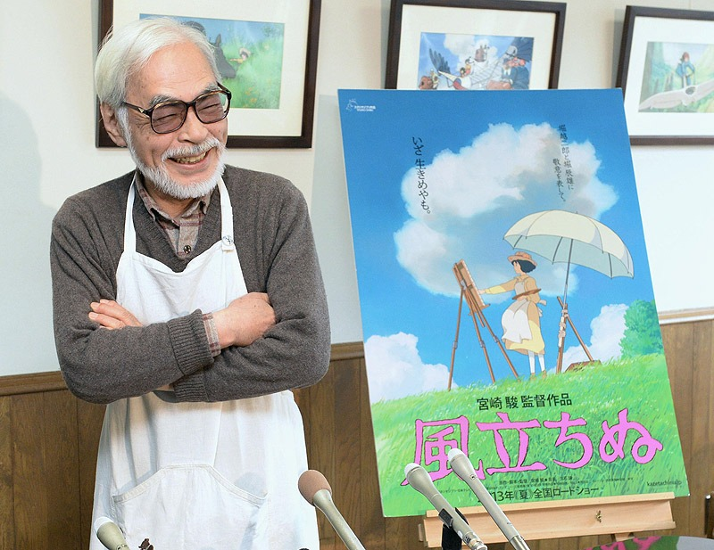

Estudio ghibli es un estudio japones fundado el 15 de junio de 1985, por Toshio Suzuki, Isao Takahata, Yasuyoshi Tokuma y el más famoso de los cuatro Hayao Miyazaki, han creado 22 peliculas las cuales 2 de ellas han ganado un Oscar y una el globo de oro.
Entre sus peliculas más reconocidas se encuentran